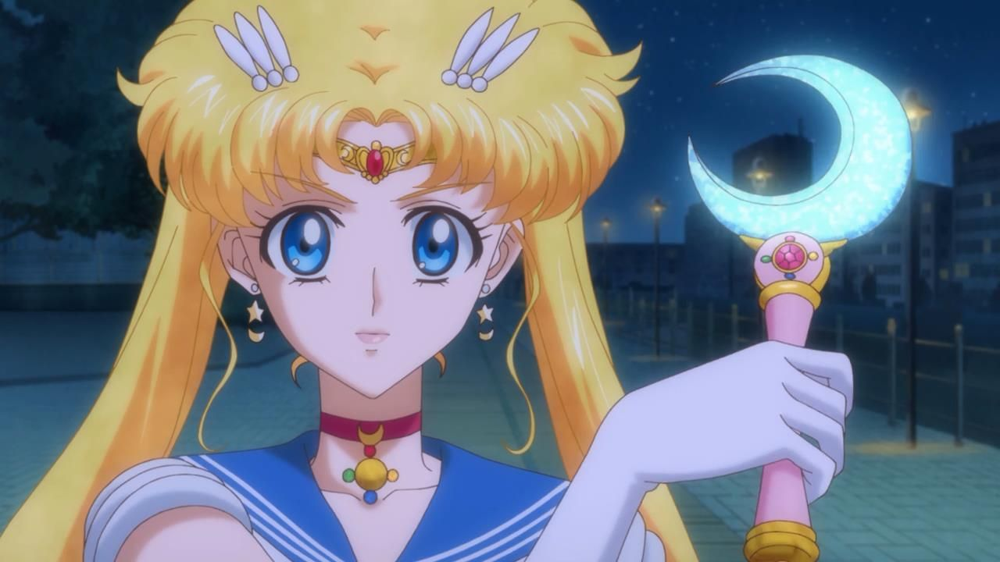
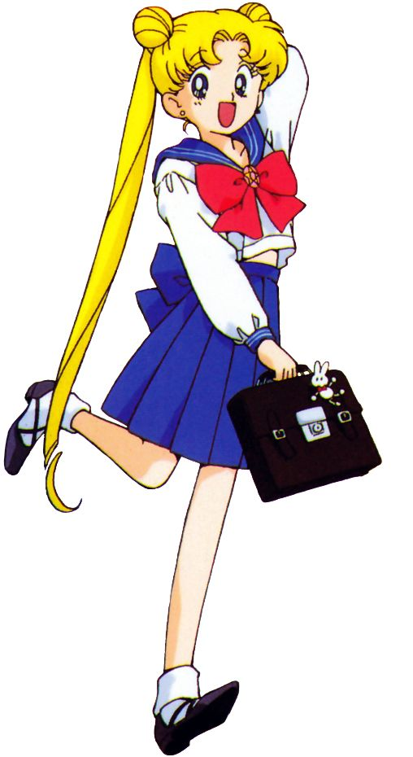
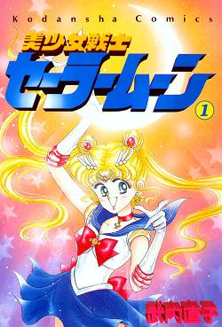
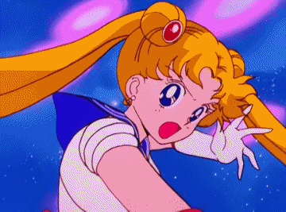

Moon Stick. Usagi gets this weapon from Luna in episode 25, she used Moon Healing Escalation on the youma to change Joe back to normal.

Serena. Serena is the English name, Usagi is the Japanese name and Bunny is the German name.

The original Sailor Moon franchise premiered on March 7, 1992, in Japan with the debut of the classic anime series on TV Asahi, following its manga serialization which began shortly before on December 28, 1991.

Rabbit. Her full name, Tsukino Usagi (remember, in Japan the surname [family name] goes first) literally means "rabbit of the moon" (tsuki = moon, no = of), although the kanji of her surname actually means "moon field".
Moon Tiara Magic. The main villain group of the first season is the Negaverse. The rulers of the Negaverse is the Negaforce and Queen Beryl. Note: Moon Tiara Magic is Sailor Moon's weakest attack.
